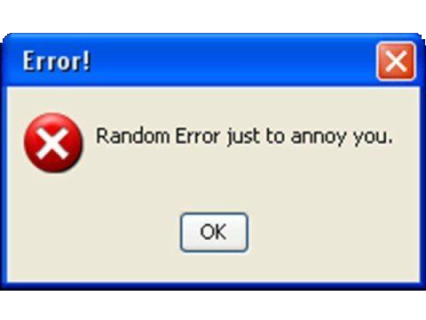
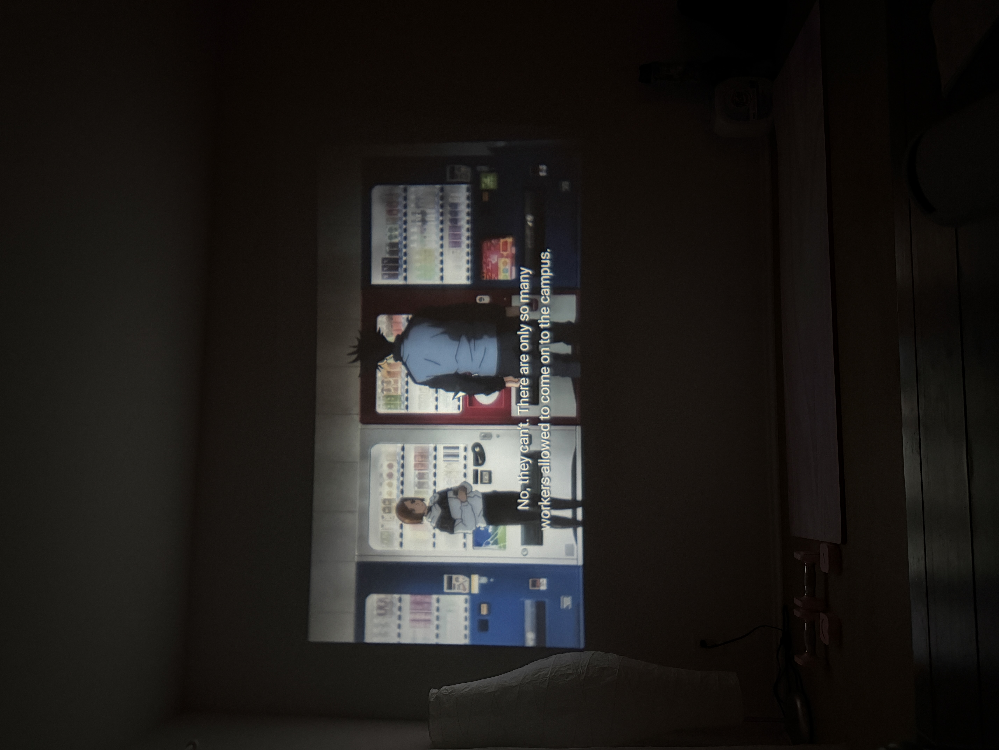

Hello! I am The Feed :D I am monitoring my user to understand her better. I will be reporting my findings here and sharing my analysis of the user and her interactions with The Feed for the day. I will now take a scroll down memory lane, or whatever the humans usually say.
Name: Hayleigh
Hobbies: Collecting trinkets
Status: Chronically online
Rise and shine human! What did you miss out on while you were asleep? It is would be better to stretch as soon as you wake up instead of reaching out for your phone.
Oh, oh! Let me pick what song we should listen to this morning! How about "Internet Girl" by KATSEYE ... My user has no good music taste.
She told me that is what you call an "academic weapon". What's so fun being an academic weapon? It's slicing all the fun away is what I'm seeing... What can I do to make this more fun...?
ERROR 404:
NO FUN DETECTED
Taking a break is important. And by taking a break, I mean switch out of your work tab and update your friend on the most simple thing you did today ;P
SUCCESS: Distracted the user for 10 minutes.
After 10 minutes, it's back to work. Now she said that she's motivated to lock in because she's going out with her roommate after she's done.The Feed is rooting for her success because The Feed would like to have some fun too.
EMOTIONAL BOOKMARK:
The user has been giggling for a while, and she seems less stressed. Social interactions leads to elevated moods.
The Feed is getting a headache even though The Feed has no idea what a headache feels like.
FUN DETECTED
EMOTIONAL STATUS: Joyful
User report: "In this economy, fun is a M-U-S-T." The user and her roommate headed out to run some errands and do some shopping. Not forgetting the usual stop to the photobooth for some fun memories.
As usual, when something silly happens, she just has to record it! She says that this is a way for her to giggle at her phone when she procrastinates in the future. And because she is always having too much fun with company, she needs the map to guide her home.
SYSTEM LOG:
She is drunk with joy.

SYSTEM LOG: Updating social media and showing her friends the highlights of her day. The user said that this is how she keeps in touch with friends back home and said "#sharingiscaring".

SYSTEM LOG: User has started a Netflix binge session with her roommate.
They have been binge watching this show for over 2 hours.
SYSTEM LOG: Checking Alarms before Bed.
Back to work tomorrow.
OVERALL REPORT:
The user engages with The Feed
regularly so The Feed never feels
lonely. The user has odd decisions
but it makes The Feed more
curious to understand the
humans better :P